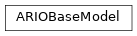

boario.model_base#
Functions#
lexico_reindex(): Reindex IOSystem lexicographicaly
- lexico_reindex(mrio)[source]#
Reindex IOSystem lexicographicaly
Sort indexes and columns of the dataframe of a
pymrioIOSystem <https://pymrio.readthedocs.io/en/latest/intro.html> by lexical order.- Parameters:
mrio (pymrio.IOSystem) – The IOSystem to sort
- Returns:
The sorted IOSystem
- Return type:
pymrio.IOSystem
- Parameters:
mrio (IOSystem) –
Classes#
ARIOBaseModel: Undocumented.
- class ARIOBaseModel(pym_mrio, *, order_type='alt', alpha_base=1.0, alpha_max=1.25, alpha_tau=365, rebuild_tau=60, main_inv_dur=90, monetary_factor=1000000, temporal_units_by_step=1, iotable_year_to_temporal_unit_factor=365, infinite_inventories_sect=None, inventory_dict=None, productive_capital_vector=None, productive_capital_to_VA_dict=None)[source]#
The core of an ARIO model. Handles the different arrays containing the mrio tables.
ARIOBaseModel wrap all the data and functions used in the core of the most basic version of the ARIO model (based on [Hal13] and [GWH+20]).
An ARIOBaseModel instance based is build on the given IOSystem. Most default parameters are the same as in [Hal13] and default order mechanisms comes from [GWH+20]. By default each industry capital stock is 4 times its value added ([Hal08]).
- Parameters:
pym_mrio (IOSystem) – The IOSystem to base the model on.
order_type (str, default “alt”) – The type of orders mechanism to use. Currently, can be “alt” or “noalt”. See Model description
alpha_base (float, default 1.0) – Base value of overproduction factor \(\alpha^{b}\) (Default to 1.0).
alpha_max (float, default 1.25) – Maximum factor of overproduction \(\alpha^{\textrm{max}}\) (default should be 1.25).
alpha_tau (int, default 365) – Characteristic time of overproduction \(\tau_{\alpha}\) in
n_temporal_units_by_step(default should be 365 days).rebuild_tau (int, default 60) – Rebuilding characteristic time \(\tau_{\textrm{REBUILD}}\) (see Model description). Overwritten by per event value if it exists.
main_inv_dur (int, default 90) – The default numbers of days for inputs inventory to use if it is not defined for an input.
monetary_factor (int, default 10**6) – Monetary unit factor (i.e. if the tables unit is 10^6 € instead of 1 €, it should be set to 10^6).
temporal_units_by_step (int, default 1) – The number of temporal_units between each step. (Current version of the model showed inconsistencies with values other than 1).
iotable_year_to_temporal_unit_factor (int, default 365) – The (inverse of the) factor by which MRIO data should be multiplied in order to get “per temporal unit value”, assuming IO data is yearly.
infinite_inventories_sect (list, optional) – List of inputs (sector) considered never constraining for production.
inventory_dict (dict, optional) – Dictionary in the form input:initial_inventory_size, (where input is a sector, and initial_inventory_size is in “temporal_unit” (defaults to a day))
productive_capital_vector (ArrayLike, optional) – Array of capital per industry if you need to give it exogenously.
productive_capital_to_VA_dict (dict, optional) – Dictionary in the form sector:ratio. Where ratio is used to estimate capital stock based on the value added of the sector.
- Parameters:
pym_mrio (IOSystem) –
order_type (str) –
alpha_base (float) –
alpha_max (float) –
alpha_tau (int) –
rebuild_tau (int) –
main_inv_dur (int) –
monetary_factor (int) –
temporal_units_by_step (int) –
iotable_year_to_temporal_unit_factor (int) –
infinite_inventories_sect (Optional[list]) –
inventory_dict (Optional[dict]) –
productive_capital_vector (Optional[pd.Series | npt.NDArray | pd.DataFrame]) –
productive_capital_to_VA_dict (Optional[dict]) –
Notes
It is recommended to use
productive_capital_to_VA_dictif you have a more precise estimation of the ratio of (Capital Stock / Value Added) per sectors than the default 4/1 ratio. You may also feed in directly aproductive_capital_vectorif you did your estimation before-hand. (This is especially useful if you have events based of an exposure layer for instance)Regarding inventories, they default to 90 days for all inputs (ie sectors). You can set some inputs to be never constraining for production by listing them in
infinite_inventories_sector directly feed in a dictionary of the inventory duration for each input.Inheritance
Attributes and Methods
- main_inv_dur: int#
The default numbers of days for inputs inventory to use if it is not defined for an input.
- Type:
int, default 90
- regions#
An array of the regions of the model.
- Type:
numpy.ndarray of str
- sectors#
An array of the sectors of the model.
- Type:
numpy.ndarray of str
- industries#
A pandas MultiIndex of the industries (region,sector) of the model.
- Type:
- final_demand_cat#
An array of the final demand categories of the model (
["Final demand"]if there is only one)- Type:
numpy.ndarray of str
- n_temporal_units_by_step#
The number of temporal_units between each step. (Current version of the model was not tested with values other than 1).
- Type:
int, default 1
- iotable_year_to_temporal_unit_factor#
The (inverse of the) factor by which MRIO data should be multiplied in order to get “per temporal unit value”, assuming IO data is yearly.
- Type:
int, default 365
- rebuild_tau#
Rebuilding characteristic time \(\tau_{\textrm{REBUILD}}\) (see Model description).
- Type:
- overprod_max#
Maximum factor of overproduction \(\alpha^{\textrm{max}}\) (default should be 1.25).
- Type:
- overprod_tau#
Characteristic time of overproduction \(\tau_{\alpha}\) in
n_temporal_units_by_step(default should be 365 days).- Type:
- inventories#
Array \(\mathbf{s}\) of size \(n\) (sectors), setting for each input the initial number of
n_temporal_units_by_stepof stock for the input. (see Model description).- Type:
numpy.ndarray of int
- Z_C#
2-dim matrix array \(\ioz^{\sectorsset}\) of size \((n, n \times m)\) representing the intermediate (transaction) matrix aggregated by inputs (see here).
- Type:
- Z_distrib#
math:ioz normalised by \(\ioz^{\sectorsset}\), i.e. representing for each input the share of the total ordered transiting from an industry to another (see here).
- Type:
- Z_0#
2-dim square matrix array \(\ioz\) of size \((n \times m, n \times m)\) representing the daily intermediate (transaction) matrix (see Initial state).
- Type:
- Y_C#
2-dim matrix array \(\ioy^{\sectorsset}\) of size \((n, m \times \text{number of final demand categories})\) representing the final demand matrix aggregated by inputs (see here).
- Type:
- Y_distrib#
math:ioy normalised by \(\ioy^{\sectorsset}\), i.e. representing for each input the share of the total ordered transiting from an industry to final demand (see here).
- Type:
- Y_0#
2-dim array \(\ioy\) of size \((n \times m, m \times \text{number of final demand categories})\) representing the daily final demand matrix.
- Type:
- X_0#
Array \(\iox(0)\) of size \(n \times m\) representing the initial daily gross production.
- Type:
- gdp_df#
Dataframe of the total GDP of each region of the model
- Type:
- VA_0#
Array \(\iov\) of size \(n \times m\) representing the total value added for each sectors.
- Type:
- tech_mat#
2-dim array \(\ioa\) of size \((n \times m, n \times m)\) representing the technical coefficients matrix.
- Type:
- k_stock#
Array of size \(n imes m\) representing the estimated stock of capital of each industry.
- Type:
Array of size \(n \times m\) representing the estimated share of a sector in its regional economy.
- Type:
2-dim square matrix array of size \((n , n \times m)\) representing the threshold under which an input is not considered being an input (0.00001).
- Type:
- overprod#
Array of size \(n \times m\) representing the overproduction coefficients vector \(\mathbf{\alpha}(t)\).
- Type:
- matrix_stock#
2-dim square matrix array \(\ioinv\) of size \((n \times m, n \times m)\) representing the stock of inputs (see Initial state).
- Type:
- matrix_orders#
2-dim square matrix array \(\ioorders\) of size \((n \times m, n \times m)\) representing the matrix of orders.
- Type:
- production#
Array \(\iox(t)\) of size \(n \times m\) representing the current gross production.
- Type:
- in_shortage#
Boolean stating if at least one industry is in shortage (i.e.) if at least one of its inputs inventory is low enough to reduce production.
- had_shortage#
Boolean stating if at least one industry was in shortage at some point.
- rebuild_prod#
Array of size \(n \times m\) representing the remaining stock of rebuilding demand asked of each industry.
- Type:
- final_demand_not_met#
Array of size \(n \times m\) representing the final demand that could not be met at current step for each industry.
- Type:
- property tot_rebuild_demand: ndarray[Any, dtype[ScalarType]]#
Returns current total rebuilding demand (as the sum of rebuilding demand addressed to each industry)
- property house_rebuild_demand_tot: ndarray[Any, dtype[ScalarType]]#
Returns total household rebuilding demand vector.
- Returns:
An array of same shape as math:iox, containing the sum of all currently rebuildable households demands.
- Return type:
npt.NDArray
- property house_rebuild_demand: ndarray[Any, dtype[ScalarType]]#
Returns household rebuilding demand matrix.
- Returns:
An array of same shape as math:ioy, containing the sum of all currently rebuildable final demand stock.
- Return type:
npt.NDArray
- property indus_rebuild_demand_tot: ndarray[Any, dtype[ScalarType]]#
Returns total industrial rebuilding demand vector.
- Returns:
An array of same shape as math:iox, containing the sum of all currently rebuildable intermediate demands.
- Return type:
npt.NDArray
- property indus_rebuild_demand: ndarray[Any, dtype[ScalarType]]#
Returns industrial rebuilding demand matrix.
- Returns:
An array of same shape as math:ioz, containing the sum of all currently rebuildable intermediate demand stock.
- Return type:
npt.NDArray
- property productive_capital_lost: ndarray[Any, dtype[ScalarType]]#
Array of size \(n \times m\) representing the estimated stock of capital currently destroyed for each industry.
- Type:
- property prod_cap_delta_arbitrary: ndarray[Any, dtype[ScalarType]]#
Return the possible “arbitrary” production capacity lost vector if it was set.
- Returns:
npt.NDArray – An array of same shape as math:iox, stating the amount of production
capacity lost arbitrarily (ie exogenous).
- property prod_cap_delta_productive_capital: ndarray[Any, dtype[ScalarType]]#
Return the possible production capacity lost due to capital destroyed vector if it was set.
- Returns:
npt.NDArray – An array of same shape as math:iox, stating the amount of production
capacity lost due to capital destroyed.
- property prod_cap_delta_tot: ndarray[Any, dtype[ScalarType]]#
Computes and return total current production delta.
- Returns:
The total production delta (ie share of production capacity lost) for each industry.
- Return type:
npt.NDArray
- update_system_from_events(events)[source]#
Update model variables according to given list of events
Computes and sets both the total production delta from all events, and the total rebuilding demand.
- property production_cap: ndarray[Any, dtype[ScalarType]]#
Compute and update production capacity.
Compute and update production capacity from current total production delta and overproduction.
\[x^{Cap}_{f}(t) = \alpha_{f}(t) (1 - \Delta_{f}(t)) x_{f}(t)\]- Raises:
ValueError – Raised if any industry has negative production.
- property total_demand: ndarray[Any, dtype[ScalarType]]#
Computes and returns total demand as the sum of intermediate demand (orders), final demand, and possible rebuilding demand.
- property production_opt: ndarray[Any, dtype[ScalarType]]#
Computes and returns “optimal production” \(\iox^{textrm{Opt}}\), as the per industry minimum between total demand and production capacity.
- property inventory_constraints_opt: ndarray[Any, dtype[ScalarType]]#
Computes and returns inventory constraints for “optimal production” (see
calc_inventory_constraints())
- property inventory_constraints_act: ndarray[Any, dtype[ScalarType]]#
Computes and returns inventory constraints for “actual production” (see
calc_inventory_constraints())
- calc_production(current_temporal_unit)[source]#
Computes and updates actual production. See Production module.
Computes
production_optandinventory_constraintsas :
\begin{alignat*}{4} \iox^{\textrm{Opt}}(t) &= (x^{\textrm{Opt}}_{f}(t))_{f \in \firmsset} &&= \left ( \min \left ( d^{\textrm{Tot}}_{f}(t), x^{\textrm{Cap}}_{f}(t) \right ) \right )_{f \in \firmsset} && \text{Optimal production}\\ \mathbf{\ioinv}^{\textrm{Cons}}(t) &= (\omega^{\textrm{Cons},f}_p(t))_{\substack{p \in \sectorsset\\f \in \firmsset}} &&= \begin{bmatrix} \tau^{1}_1 & \hdots & \tau^{p}_1 \\ \vdots & \ddots & \vdots\\ \tau^1_n & \hdots & \tau^{p}_n \end{bmatrix} \odot \begin{bmatrix} \iox^{\textrm{Opt}}(t)\\ \vdots\\ \iox^{\textrm{Opt}}(t) \end{bmatrix} \odot \ioa^{\sectorsset} && \text{Inventory constraints} \\ &&&= \begin{bmatrix} \tau^{1}_1 x^{\textrm{Opt}}_{1}(t) a_{11} & \hdots & \tau^{p}_1 x^{\textrm{Opt}}_{p}(t) a_{1p}\\ \vdots & \ddots & \vdots\\ \tau^1_n x^{\textrm{Opt}}_{1}(t) a_{n1} & \hdots & \tau^{p}_n x^{\textrm{Opt}}_{p}(t) a_{np} \end{bmatrix} && \\ \end{alignat*}If stocks do not meet
inventory_constraintsfor any inputs, then decrease production accordingly :
\begin{alignat*}{4} \iox^{a}(t) &= (x^{a}_{f}(t))_{f \in \firmsset} &&= \left \{ \begin{aligned} & x^{\textrm{Opt}}_{f}(t) & \text{if $\omega_{p}^f(t) \geq \omega^{\textrm{Cons},f}_p(t)$}\\ & x^{\textrm{Opt}}_{f}(t) \cdot \min_{p \in \sectorsset} \left ( \frac{\omega^s_{p}(t)}{\omega^{\textrm{Cons,f}}_p(t)} \right ) & \text{if $\omega_{p}^f(t) < \omega^{\textrm{Cons},f}_p(t)$} \end{aligned} \right. \quad && \end{alignat*}Also warns in logs if such shortages happen.
- calc_inventory_constraints(production)[source]#
Compute inventory constraints (no psi parameter, for the psi version, the recommended one, see
calc_inventory_constraints())See
calc_production()for how inventory constraints are computed.- Parameters:
production (npt.NDArray) – The production vector to consider.
- Returns:
npt.NDArray – For each input, for each industry, the size of the inventory required to produce at production level
for the duration goal (inv_duration).
- Parameters:
- Return type:
- distribute_production(rebuildable_events, scheme='proportional')[source]#
Production distribution module
Computes rebuilding demand for each rebuildable events (applying the rebuild_tau characteristic time)
Creates/Computes total demand matrix (Intermediate + Final + Rebuild)
Assesses if total demand is greater than realized production, hence requiring rationing
Distributes production proportionally to demand such that :
\begin{alignat*}{4} &\ioorders^{\textrm{Received}}(t) &&= \left (\frac{o_{ff'}(t)}{d^{\textrm{Tot}}_f(t)} \cdot x^a_f(t) \right )_{f,f'\in \firmsset}\\ &\ioy^{\textrm{Received}}(t) &&= \left ( \frac{y_{f,c}}{d^{\textrm{Tot}}_f(t)}\cdot x^a_f(t) \right )_{f\in \firmsset, c \in \catfdset}\\ &\Damage^{\textrm{Repaired}}(t) &&= \left ( \frac{\gamma_{f,c}}{d^{\textrm{Tot}}_f(t)} \cdot x^a_f(t) \right )_{f\in \firmsset, c \in \catfdset}\\ \end{alignat*}Where :
\(\ioorders^{\textrm{Received}}(t)\) is the received orders matrix,
\(\ioy^{\textrm{Received}}(t)\) is the final demand received matrix,
\(\Damage^{\textrm{Repared}}(t)\) is the rebuilding/repair achieved matrix,
\(d^{\textrm{Tot}}_f(t)\) is the total demand to industry \(f\),
\(x^a_f(t)\) is \(f\)’s realized production,
\(o_{ff'}(t)\) is the quantity of product ordered by industry \(f'\) to industry \(f\),
\(y_{fc}(t)\) is the quantity of product ordered by household \(c\) to industry \(f\),
\(\gamma_{fc}(t)\) is the repaired/rebuilding demand ordered to \(f\).
Updates stocks matrix. (Only if np.allclose(stock_add, stock_use).all() is false)
\begin{alignat*}{4} &\ioinv(t+1) &&= \ioinv(t) + \left ( \mathbf{I}_{\textrm{sum}} \cdot \ioorders^{\textrm{Received}}(t) \right ) - \left ( \colvec{\iox^{\textrm{a}}(t)}{\iox^{\textrm{a}}(t)} \odot \ioa^{\sectorsset} \right )\\ \end{alignat*}Where :
\(\ioinv\) is the inventory matrix,
\(\mathbf{I}_{\textrm{sum}}\) is a row summation matrix,
\(\ioa^{\sectorsset}\) is the (input not specific to region) technical coefficients matrix.
Computes final demand not met due to rationing and write it.
Updates rebuilding demand for each event (by substracting distributed production)
- Parameters:
current_temporal_unit (int) – Current temporal unit (day|week|… depending on parameters) (required to write the final demand not met)
events (‘list[Event]’) – List of rebuildable events
scheme (str) – Placeholder for future distribution scheme
separate_rebuilding (bool) – Currently unused.
- Returns:
The list of events to remove from current events (as they are totally rebuilt)
- Return type:
- Raises:
RuntimeError – If negative values are found in places there’s should not be any
ValueError – If an attempt to run an unimplemented distribution scheme is tried
- Parameters:
rebuildable_events (list[EventKapitalRebuild]) –
scheme (str) –
- calc_matrix_stock_gap(matrix_stock_goal)[source]#
Computes and returns inputs stock gap matrix
The gap is simply the difference between the goal (given as argument) and the current stock.
- Parameters:
matrix_stock_goal (npt.NDArray of float) – The target inventories.
- Returns:
The (only positive) gap between goal and current inventories.
- Return type:
npt.NDArray
- Raises:
RuntimeError – If NaN are found in the result.
- calc_orders()[source]#
Computes and sets the orders (intermediate demand) for the next step.
See Order module
- Raises:
RuntimeError – If negative orders are found, which shouldn’t happen.
- Return type:
None
- reset_module()[source]#
Resets the model to initial state [Deprecated]
This method has not been checked extensively.
- Return type:
None
- write_index(index_file)[source]#
Write the indexes of the different dataframes of the model in a json file.
In order to easily rebuild the dataframes from the ‘raw’ data, this method create a JSON file with all columns and indexes names, namely :
regions names
sectors names
final demand categories
number of regions, sectors and industries (regions * sectors)
Variables#
- INV_THRESHOLD#
int([x]) -> integer int(x, base=10) -> integer
Convert a number or string to an integer, or return 0 if no arguments are given. If x is a number, return x.__int__(). For floating point numbers, this truncates towards zero.
If x is not a number or if base is given, then x must be a string, bytes, or bytearray instance representing an integer literal in the given base. The literal can be preceded by ‘+’ or ‘-’ and be surrounded by whitespace. The base defaults to 10. Valid bases are 0 and 2-36. Base 0 means to interpret the base from the string as an integer literal. >>> int(‘0b100’, base=0) 4
0
- VALUE_ADDED_NAMES#
Built-in mutable sequence.
If no argument is given, the constructor creates a new empty list. The argument must be an iterable if specified.
['VA', 'Value Added', 'value added', 'factor inputs', 'factor_inputs', 'Factors Inputs', 'Satellite Accounts', 'satellite accounts', 'satellite_accounts', 'satellite']
- VA_idx#
- ndarray(shape, dtype=float, buffer=None, offset=0,
strides=None, order=None)
An array object represents a multidimensional, homogeneous array of fixed-size items. An associated data-type object describes the format of each element in the array (its byte-order, how many bytes it occupies in memory, whether it is an integer, a floating point number, or something else, etc.)
Arrays should be constructed using array, zeros or empty (refer to the See Also section below). The parameters given here refer to a low-level method (ndarray(…)) for instantiating an array.
For more information, refer to the numpy module and examine the methods and attributes of an array.
- Parameters:
(for the __new__ method; see Notes below)
shape (tuple of ints) – Shape of created array.
dtype (data-type, optional) – Any object that can be interpreted as a numpy data type.
buffer (object exposing buffer interface, optional) – Used to fill the array with data.
offset (int, optional) – Offset of array data in buffer.
strides (tuple of ints, optional) – Strides of data in memory.
order ({‘C’, ‘F’}, optional) – Row-major (C-style) or column-major (Fortran-style) order.
- Variables:
T (ndarray) – Transpose of the array.
data (buffer) – The array’s elements, in memory.
dtype (dtype object) – Describes the format of the elements in the array.
flags (dict) – Dictionary containing information related to memory use, e.g., ‘C_CONTIGUOUS’, ‘OWNDATA’, ‘WRITEABLE’, etc.
flat (numpy.flatiter object) – Flattened version of the array as an iterator. The iterator allows assignments, e.g.,
x.flat = 3(See ndarray.flat for assignment examples; TODO).imag (ndarray) – Imaginary part of the array.
real (ndarray) – Real part of the array.
size (int) – Number of elements in the array.
itemsize (int) – The memory use of each array element in bytes.
nbytes (int) – The total number of bytes required to store the array data, i.e.,
itemsize * size.ndim (int) – The array’s number of dimensions.
shape (tuple of ints) – Shape of the array.
strides (tuple of ints) – The step-size required to move from one element to the next in memory. For example, a contiguous
(3, 4)array of typeint16in C-order has strides(8, 2). This implies that to move from element to element in memory requires jumps of 2 bytes. To move from row-to-row, one needs to jump 8 bytes at a time (2 * 4).ctypes (ctypes object) – Class containing properties of the array needed for interaction with ctypes.
base (ndarray) – If the array is a view into another array, that array is its base (unless that array is also a view). The base array is where the array data is actually stored.
See also
arrayConstruct an array.
zerosCreate an array, each element of which is zero.
emptyCreate an array, but leave its allocated memory unchanged (i.e., it contains “garbage”).
dtypeCreate a data-type.
numpy.typing.NDArrayAn ndarray alias generic w.r.t. its dtype.type <numpy.dtype.type>.
Notes
There are two modes of creating an array using
__new__:If buffer is None, then only shape, dtype, and order are used.
If buffer is an object exposing the buffer interface, then all keywords are interpreted.
No
__init__method is needed because the array is fully initialized after the__new__method.Examples
These examples illustrate the low-level ndarray constructor. Refer to the See Also section above for easier ways of constructing an ndarray.
First mode, buffer is None:
>>> np.ndarray(shape=(2,2), dtype=float, order='F') array([[0.0e+000, 0.0e+000], # random [ nan, 2.5e-323]])
Second mode:
>>> np.ndarray((2,), buffer=np.array([1,2,3]), ... offset=np.int_().itemsize, ... dtype=int) # offset = 1*itemsize, i.e. skip first element array([2, 3])
array(['Taxes less subsidies on products purchased: Total', 'Other net taxes on production', "Compensation of employees; wages, salaries, & employers' social contributions: Low-skilled", "Compensation of employees; wages, salaries, & employers' social contributions: Medium-skilled", "Compensation of employees; wages, salaries, & employers' social contributions: High-skilled", 'Operating surplus: Consumption of fixed capital', 'Operating surplus: Rents on land', 'Operating surplus: Royalties on resources', 'Operating surplus: Remaining net operating surplus'], dtype=object)